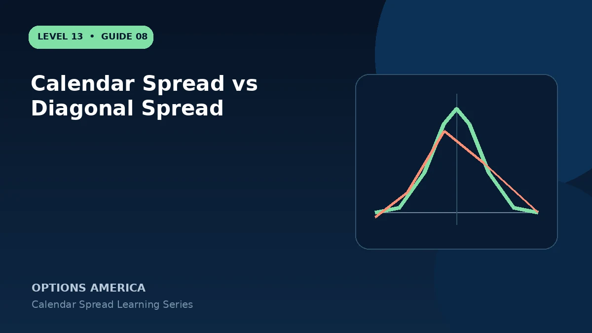

Compare same-strike calendars with different-strike diagonals across directional bias, credit or debit, Greeks and management.
Construction
The standard calendar sells and buys the same strike in different expirations. A diagonal typically sells a near option at one strike and buys a later option at another strike.
Directional shape
Moving the long and short strikes apart can add bullish or bearish delta and reshape the front-expiration value curve. The diagonal is not merely a calendar with a wider profit zone.
Pricing and risk
Some diagonals open for a debit and others for a credit. Maximum risk can depend on strike relationship, assignment and what happens after the short option expires, so map the complete position.
Management
Rolling the short option can turn a calendar into a diagonal or change an existing diagonal again. Track total debits and credits across every cycle rather than evaluating only the latest roll.
A practical example
Selling a 30-day 105 call and buying a 90-day 100 call creates a diagonal, while buying and selling the 105 strike would create a calendar.
This simplified example uses selected price, time and volatility assumptions; live results will differ. Live option prices also reflect the underlying price, time decay, rates, dividends, liquidity and transaction costs. Greeks are theoretical estimates, not guarantees.
Frequently asked questions
What defines a diagonal?
Different strikes and different expirations.
Can a calendar become a diagonal?
Yes, after rolling the short leg to another strike.
Which is more directional?
A diagonal commonly carries more intentional directional exposure.
Continue the Calendar Spreads cluster
Explore related guides: Calendar Spread vs Vertical Spread · Implied Volatility and Vega in Calendar Spreads · How to Build a Calendar Spread. For a structured sequence, use the free Level 13 – Calendar Spreads course.
Options involve risk and are not suitable for every investor. This material is educational and is not investment, tax or legal advice. Greeks are theoretical estimates, and contract terms and broker requirements can vary.